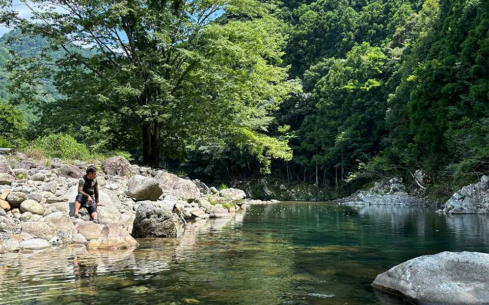
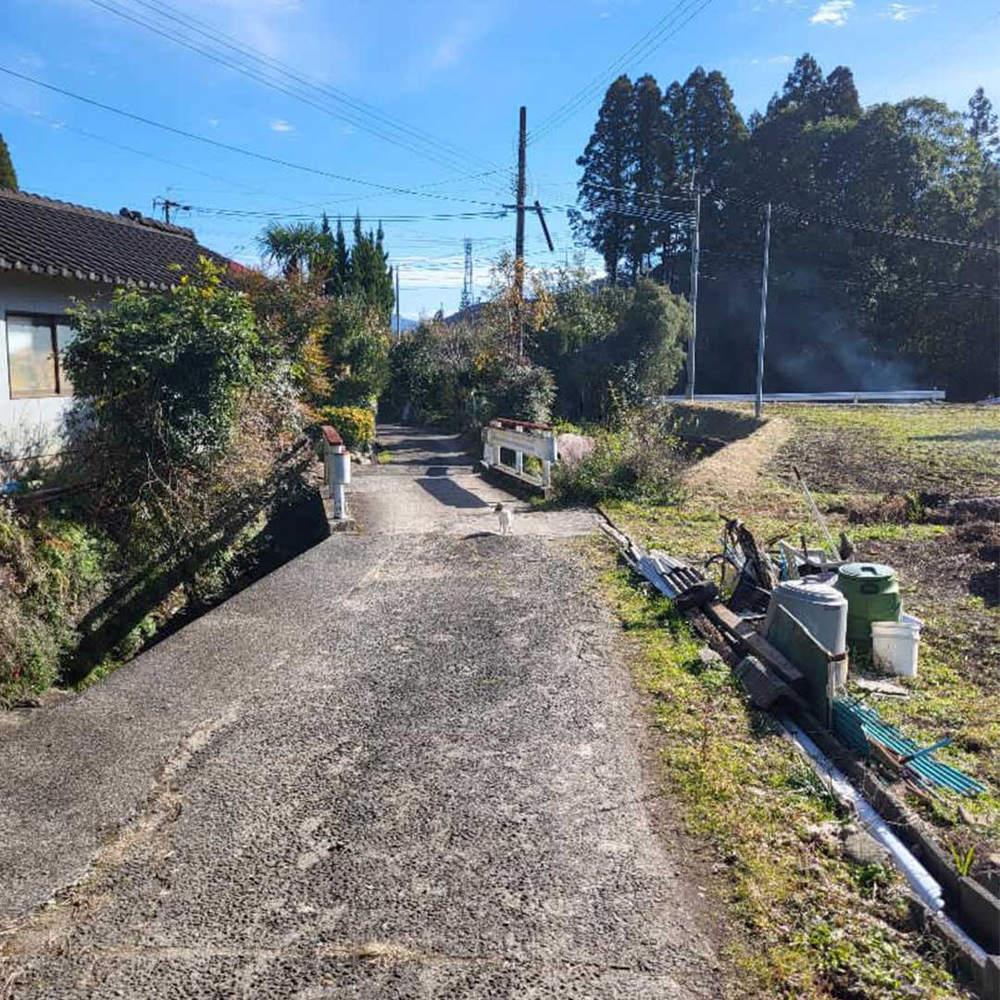

Places to Visit
Travel beyond the major cities and experience the authentic charm of Japan’s countryside. Find travel guides and destination insights for local regions across the country.

Wakayama
A region famous for its sacred mountain trails, coastal hot springs, and abundant nature. Walk the historic Kumano Kodo pilgrimage routes, enjoy fresh local citrus, and visit beautiful riverside villages.
Learn More
Kagoshima
A unique destination shaped by an active volcano and historic samurai heritage. Explore the birthplace of the Meiji Restoration, try traditional hot volcanic sand baths on the beach, and enjoy local black pork.
Learn More